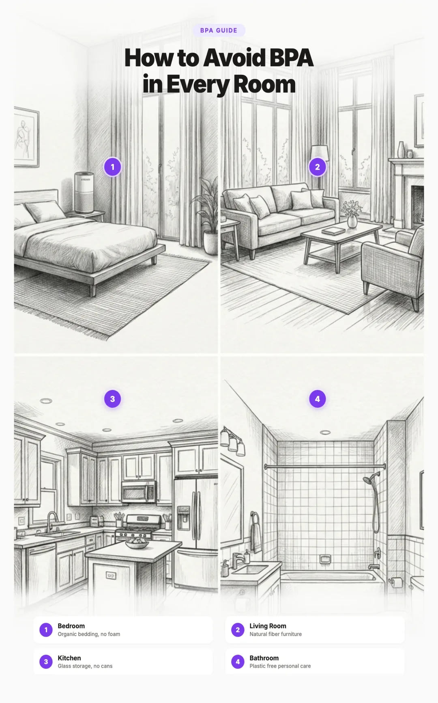

How to Avoid BPA and Phthalates in Everyday Products: A Room by Room Guide (2026)
BPA and phthalates are two of the most widespread endocrine disrupting chemicals on the planet. They are in your food containers, your shampoo, your flooring, your children's toys, and even the receipt you got at the grocery store this morning. The average American has detectable levels of both chemicals in their body at any given time.
The good news: once you stop the exposure, your body clears most of these chemicals within days. Unlike heavy metals that accumulate for years, BPA and phthalates have short half lives. That means every swap you make has an almost immediate effect on your body's chemical burden.
This guide walks through every room in your home, identifies the most common sources, and gives you practical replacements. We have ranked the swaps by impact so you can start with the changes that matter most.

What Are BPA and Phthalates?
BPA (bisphenol A) is a synthetic chemical used to make polycarbonate plastics and epoxy resins. It was first synthesized in 1891 and has been used in consumer products since the 1950s. BPA makes plastic hard and clear. You will find it in food can linings, water bottles, food storage containers, and thermal receipt paper.
Phthalates are a family of chemicals used to make plastics soft and flexible. They are also used as solvents and carriers in fragrances. There are many types, but the most common in consumer products include DEHP, DBP, DEP, and DINP. They are found in vinyl flooring, shower curtains, personal care products, cleaning products, and plastic wrap.
Both BPA and phthalates are endocrine disruptors. This means they mimic or interfere with your body's hormones, particularly estrogen, testosterone, and thyroid hormones. Even at extremely low doses (parts per billion), they can alter hormone signaling in ways that affect development, reproduction, metabolism, and immune function.
Health Effects: Why You Should Care
The peer reviewed research on BPA and phthalates now spans thousands of studies. Here is what the science consistently shows:
BPA Health Effects
- Reproductive harm: Reduced sperm count, lower testosterone, increased risk of PCOS, endometriosis, and infertility. A 2023 meta analysis linked BPA exposure to a 23% reduction in sperm concentration.
- Metabolic disruption: Increased risk of type 2 diabetes, obesity, and insulin resistance. BPA interferes with pancreatic beta cells and adipose tissue signaling.
- Developmental effects: Prenatal BPA exposure is linked to behavioral changes, ADHD symptoms, and altered brain development in children.
- Cancer risk: BPA's estrogenic activity is associated with increased risk of breast and prostate cancer. The National Toxicology Program has expressed concern about its effects on the developing breast.
- Cardiovascular effects: Higher urinary BPA levels are associated with increased risk of heart disease and hypertension.
Phthalate Health Effects
- Male reproductive harm: Phthalates are anti androgenic, meaning they block testosterone. They are linked to reduced sperm quality, shorter anogenital distance in male infants, and testicular dysgenesis syndrome.
- Female reproductive harm: Associated with premature ovarian failure, endometriosis, and reduced egg quality.
- Thyroid disruption: Multiple phthalates interfere with thyroid hormone synthesis and transport, affecting metabolism and brain development.
- Respiratory issues: DEHP exposure is linked to increased asthma and allergy rates, particularly in children.
- Neurodevelopmental effects: Prenatal phthalate exposure is associated with lower IQ scores, attention problems, and motor development delays.
Where BPA Hides in Your Home
BPA is far more widespread than most people realize. Here are the major sources, many of which are not obvious:
- Canned food linings: The inner coating of most metal food cans is an epoxy resin made with BPA. This is one of the largest dietary sources. Acidic foods like tomatoes, citrus fruits, and soups leach the most BPA from can linings.
- Thermal receipt paper: Receipts from grocery stores, ATMs, gas pumps, and fast food restaurants are coated in BPA or BPS. The chemical transfers to your skin on contact and is absorbed rapidly, especially if your hands are wet or have lotion on them.
- Plastic containers marked #7 (Other): The recycling code #7 is a catch all category that includes polycarbonate, which is made with BPA. Older reusable water bottles, food storage containers, and baby bottles often fall into this category.
- Plastic containers marked #3 (PVC): While PVC is more associated with phthalates, some PVC products also contain BPA based stabilizers.
- Water bottles: Polycarbonate water bottles (hard, clear, often blueish tint) leach BPA, especially when exposed to heat or sunlight. Even some "BPA free" bottles leach BPS or BPF instead.
- Dental sealants and composites: Some dental sealants, fillings, and orthodontic materials contain BPA based resins. Research has shown that BPA levels in saliva can spike for 24 to 72 hours after dental procedures using these materials.
- Water supply pipes: Epoxy coatings used to line older water pipes can leach BPA into drinking water, particularly in buildings with recently relined pipes.
- Sports equipment: Polycarbonate helmets, water bottles, and protective equipment can contain BPA.
Where Phthalates Hide in Your Home
Phthalates are even more pervasive than BPA because they serve two purposes: softening plastics and carrying fragrance. If a product is soft, flexible plastic or it has a scent, there is a strong chance phthalates are involved.
- Fragranced products (the biggest source): Any product that lists "fragrance" or "parfum" in its ingredients almost certainly contains phthalates, specifically DEP (diethyl phthalate), which is used to make scents last longer. This includes perfume, cologne, scented lotion, scented laundry detergent, air fresheners, and scented candles.
- Vinyl and PVC products: Vinyl flooring, PVC shower curtains, vinyl tablecloths, vinyl car interiors, and vinyl upholstery all contain phthalates (usually DEHP) as plasticizers. That "new car smell" is largely phthalates off gassing from vinyl components.
- Personal care products: Shampoo, conditioner, body wash, nail polish, hair spray, deodorant, and cosmetics frequently contain phthalates. They help products spread smoothly, absorb into skin, and maintain consistency.
- Cleaning products: Scented cleaners, dish soap, laundry detergent, and dryer sheets often contain phthalates as part of their fragrance formulation.
- Plastic wrap and food packaging: PVC based plastic wraps (like commercial deli wrap) contain phthalate plasticizers that leach into food, especially fatty foods like cheese and meat.
- Children's toys: Soft plastic toys, particularly older ones or those manufactured outside the US, may contain phthalates. While the CPSIA banned certain phthalates in children's products in 2008, enforcement is inconsistent and many phthalates remain unregulated.
- Medication coatings: Some pharmaceutical coatings and capsules use phthalates (particularly DBP) as enteric coatings. Medications for chronic conditions mean ongoing phthalate exposure.
- Dust: Phthalates settle in household dust as they off gas from flooring, furniture, and other products. Young children who crawl on floors and put hands in their mouths are especially exposed through this route.
Why "BPA Free" Is Not Safe
The "BPA Free" label is one of the most successful examples of greenwashing in consumer products. When public pressure forced manufacturers to remove BPA, most of them simply replaced it with structurally similar chemicals: BPS (bisphenol S) and BPF (bisphenol F).
The research on these replacements is now clear, and it is not reassuring:
- A 2020 study in Environmental Health Perspectives found that BPS and BPF have similar estrogenic activity to BPA and bind to estrogen receptors at comparable rates.
- A 2023 study in Environmental Science & Technology found BPS in 81% of urine samples tested in the United States, often at higher concentrations than BPA itself.
- Animal studies show BPS causes the same reproductive and metabolic effects as BPA, including altered brain development in zebrafish embryos at environmentally relevant concentrations.
- BPF has been shown to have even stronger anti androgenic effects than BPA in some studies.
This "regrettable substitution" pattern repeats across the chemical industry. When one chemical is identified as harmful and banned or phased out, manufacturers switch to a closely related chemical that has not yet been studied as thoroughly, but often turns out to be just as problematic. The safer approach is to avoid the entire category of materials rather than trusting labels about individual chemicals.
Kitchen Swaps: Your Highest Impact Room
The kitchen is where most BPA and phthalate exposure happens because it is where food meets plastic. Heat, acidity, and fat all accelerate chemical leaching. Here are the swaps to make, in order of impact:
Replace Plastic Food Storage with Glass
Plastic food storage containers are one of the largest sources of dietary BPA and phthalate exposure, especially when used for hot food or reheating. Glass containers are completely inert and will not leach any chemicals regardless of temperature or food type.
Our recommendation: Pyrex Simply Store Glass Food Storage Set is the gold standard. Borosilicate glass (or tempered soda lime glass in newer Pyrex) is oven, microwave, freezer, and dishwasher safe. These containers last for decades.
For a deep dive into the best food storage materials and options, see our complete guide to reducing plastic exposure.
Switch to a Stainless Steel or Glass Water Bottle
Reusable plastic water bottles, even BPA free ones, leach chemicals over time, especially when exposed to heat (like sitting in a car) or UV light. A stainless steel or glass water bottle eliminates this entirely.
Our recommendation: Klean Kanteen Classic Stainless Steel Water Bottle uses 18/8 food grade stainless steel with no plastic liner. It is one of the cleanest water bottles on the market.
For more on filtering your water before it goes in that bottle, see our complete water filter guide.
Reduce Canned Food or Choose Safer Brands
The epoxy linings in most food cans are a major source of BPA. Acidic foods like tomatoes, beans, and soups leach the most. You have several options:
- Buy foods in glass jars instead of cans (tomato sauce, beans, and soups are all available in glass)
- Choose Tetra Pak cartons, which generally have lower BPA levels than cans
- Buy fresh or frozen produce instead of canned
- Look for brands that use BPA free, BPS free, and BPF free can linings (these are rare but growing)
- Cook dried beans from scratch instead of buying canned
Replace Plastic Wrap with Beeswax Wraps or Silicone Lids
Commercial plastic wrap, especially PVC based deli wrap, contains phthalates that transfer to food on contact. Fatty foods like cheese and meat absorb the most.
Our recommendation: Bee's Wrap Reusable Beeswax Food Wraps are made from organic cotton, beeswax, jojoba oil, and tree resin. They work for covering bowls, wrapping cheese, sandwiches, and produce.
Use Stainless Steel Lunch Containers
Plastic lunch boxes and containers expose food to chemicals for hours. Stainless steel is completely inert.
Our recommendation: LunchBots Stainless Steel Lunch Container is durable, leak resistant, and has no plastic liners. Perfect for both kids and adults.
Upgrade Your Cookware
Non stick coatings and some plastic handled cookware can contribute to chemical exposure. For a full comparison of the safest cookware materials, see our cast iron vs stainless steel vs ceramic cookware guide.
Switch to Plastic Free Coffee Brewing
Many coffee makers have plastic reservoirs and tubing that heat water passes through. For the full breakdown of which coffee methods are safest, see our guide to enjoying coffee without plastic.
Bathroom Swaps: Eliminating Phthalates from Personal Care
The bathroom is phthalate central. Nearly every conventional personal care product contains fragrance, and fragrance almost always means phthalates. The skin is your body's largest organ, and it absorbs chemicals readily, particularly from products that stay on for hours like lotion, deodorant, and cosmetics.
Switch to Fragrance Free Everything
This single change eliminates the majority of your phthalate exposure from personal care. Replace scented products with fragrance free versions of:
- Shampoo and conditioner
- Body wash and soap
- Lotion and moisturizer
- Deodorant
- Laundry detergent and fabric softener
- Dish soap
Use Castile Soap as a Multi Purpose Cleaner
Our recommendation: Dr. Bronner's Pure Castile Liquid Soap (Unscented Baby Mild) can replace body wash, hand soap, and even household cleaner when diluted. The ingredients list is short and transparent: water, organic coconut oil, potassium hydroxide, organic olive oil, organic hemp seed oil, organic jojoba oil, citric acid, and tocopherol (vitamin E). No fragrance, no phthalates, no mystery chemicals.
Choose Phthalate Free Laundry Products
Your laundry detergent residue stays on your clothes and bedding, meaning you have skin contact with those chemicals 24 hours a day. Fragranced dryer sheets are particularly problematic because they are designed to coat fabrics in scent (which means coating them in phthalates).
Our recommendation: ATTITUDE Fragrance Free Laundry Detergent is EWG verified, plant based, and contains zero fragrance or phthalates. Skip the dryer sheets entirely and use wool dryer balls instead.
Replace Your Shower Curtain
PVC (vinyl) shower curtains are one of the most concentrated sources of phthalates in any home. They off gas heavily, especially when new, and the warm, humid environment of a bathroom accelerates the release. Replace with a fabric shower curtain (cotton, hemp, or polyester) or a PEVA liner, which is PVC free.
Choose Safer Bathroom Cleaners
Our recommendation: ATTITUDE Bathroom Cleaner is fragrance free (or naturally scented with essential oils, not synthetic fragrances), EWG verified, and free of phthalates and other endocrine disruptors.
Switch to Natural Deodorant
Conventional deodorants and antiperspirants frequently contain fragrance (phthalates) and may also come in plastic packaging that leaches chemicals. Look for deodorant options in cardboard or glass packaging that list every ingredient transparently and contain no "fragrance" or "parfum."
Our recommendations:
- Each & Every Aluminum Free Deodorant — aluminum free, plant based, Dead Sea salt formula. Available for women and men.
- Wild The Full Monty Aluminum Free Deodorant — aluminum free with a refillable case system. Bamboo pulp refill pods. Leaping Bunny and Vegan certified.
- Primally Pure Deodorant — organic ingredients including tallow, beeswax, and essential oils. No synthetic fragrances or aluminum. Baking soda free version available.
- Salt of the Earth Natural Deodorant — natural mineral salt based. No aluminum chlorohydrate, no parabens, no synthetic fragrances. Vegan and cruelty free.
Bedroom Swaps: Where You Spend a Third of Your Life
You spend approximately eight hours per night in your bedroom, and during sleep your body is actively repairing and regenerating. The chemicals you breathe during those hours matter enormously. Bedrooms are often overlooked as a source of exposure, but they can be significant.
Consider an Organic or Natural Mattress
Conventional memory foam mattresses contain phthalates, flame retardants, and other chemicals that off gas into the air you breathe all night. The off gassing is strongest when the mattress is new, but it continues for years. Look for mattresses made with:
- Natural latex (from rubber trees, not synthetic)
- Organic cotton
- Organic wool (a natural flame retardant)
- CertiPUR US certification (for foam mattresses, this means lower but not zero chemical content)
- GOTS (Global Organic Textile Standard) or GOLS (Global Organic Latex Standard) certification
This is one of the more expensive swaps, but given how many hours you spend on your mattress, the dose over a lifetime is substantial. If a new mattress is not in the budget right now, at minimum use an organic mattress protector as a barrier and ensure good bedroom ventilation.
Choose Organic Cotton or Linen Bedding
Conventional bedding is often treated with wrinkle resistant finishes and fragrance that contain phthalates. Organic cotton, linen, or hemp bedding avoids these treatments entirely. Wash new bedding before first use regardless of material.
Remove Scented Products from the Bedroom
This means scented candles, plug in air fresheners, room sprays, and reed diffusers. All of these release phthalates into the air. If you want scent in your bedroom, use a few drops of pure essential oil on your pillow or in a simple ceramic diffuser (not a plastic one).
Living Room and Home Swaps
Avoid Vinyl (PVC) Flooring
Vinyl flooring is one of the largest surface area sources of phthalates in a home. DEHP and other phthalate plasticizers off gas continuously and settle into household dust that you breathe and that children ingest when they play on the floor. If you are renovating or choosing new flooring, safer alternatives include:
- Hardwood (solid or engineered with low VOC finish)
- Tile (ceramic or porcelain)
- Natural linoleum (made from linseed oil, not to be confused with vinyl "linoleum")
- Cork
- Bamboo
If removing vinyl flooring is not possible right now, frequent wet mopping reduces phthalate laden dust significantly. A HEPA vacuum also helps capture fine particles that a regular vacuum recirculates.
Replace PVC Blinds and Window Treatments
Vinyl mini blinds are a concentrated source of phthalates and can also contain lead stabilizers, especially older ones. Replace with wood, aluminum, or fabric blinds and curtains.
Eliminate Air Fresheners
Every type of air freshener (sprays, plug ins, gels, beads, car fresheners) relies on synthetic fragrance that contains phthalates. Eliminating them is free and immediate. If odors are a concern, address the source rather than masking it. Open windows, use baking soda, or place bowls of white vinegar to absorb smells.
Reduce Dust Accumulation
Phthalates and BPA both settle into household dust. A 2019 study from George Washington University found that DEHP was the most abundant phthalate in dust samples from US homes. Regular wet dusting and HEPA vacuuming can reduce exposure by 50% or more. Pay special attention to areas where dust accumulates: under furniture, behind electronics, and around HVAC vents.
Kids and Baby Products
Children are more vulnerable to BPA and phthalates than adults for several reasons: they eat and drink more relative to their body weight, their organs are still developing, and their detoxification systems are less mature. They also spend more time on the floor (where phthalate laden dust settles) and put objects in their mouths.
Baby Bottles and Feeding
Plastic baby bottles release millions of microplastic particles, especially when heated. Even BPA free plastic bottles leach BPS and other chemicals. For a complete guide to building the safest feeding setup, see our microplastics in baby food guide.
Toys
Look for toys made from natural materials: untreated wood, organic cotton, natural rubber, and food grade silicone. Avoid soft, flexible plastic toys (especially those with a strong plastic smell) as these likely contain phthalates. Check for ASTM F963 compliance and look for brands that test for phthalates specifically.
Sippy Cups and Children's Dishes
Replace plastic sippy cups and plates with stainless steel or silicone alternatives. Stainless steel sippy cups are virtually indestructible and leach nothing. For plates and bowls, look for bamboo, stainless steel, or food grade silicone options.
Clothing and Pajamas
Some children's clothing, particularly vinyl prints and characters on synthetic fabrics, can contain phthalates. Choose organic cotton, especially for pajamas and undergarments that are worn close to the skin for long periods. Avoid clothing with vinyl or "pleather" elements.
How to Read Labels: Ingredients and Certifications
Knowing how to read labels is your most powerful tool for avoiding BPA and phthalates. Here is what to look for and what to avoid:
Ingredients to Avoid on Personal Care Labels
- "Fragrance" or "Parfum": This is the number one red flag. It almost always contains phthalates (DEP) unless the product specifically states phthalate free.
- DEP, DBP, DEHP, DINP, DIDP, BBP: These are specific phthalates. If they appear in an ingredient list, avoid the product.
- "Plasticizer" or "Flexibility agent": Vague terms that often indicate phthalates.
Recycling Codes to Watch
- #3 (PVC/V): Contains phthalates. Avoid for any food contact or children's products.
- #7 (Other/O): May contain BPA (polycarbonate). If it says "PC" underneath, it definitely contains BPA. Avoid for food contact.
- #6 (PS): Polystyrene leaches styrene. Not a bisphenol or phthalate, but still harmful. Avoid for hot food.
Certifications You Can Trust
| Certification | What It Means | Trust Level |
|---|---|---|
| EWG Verified | Product meets Environmental Working Group standards: no ingredients on their unacceptable list, full transparency | High |
| MADE SAFE | Screened for known toxicants including endocrine disruptors. One of the most rigorous certifications. | High |
| USDA Organic | For food and personal care: no synthetic chemicals, though processing may introduce contact with plastic equipment | Good |
| NSF/ANSI 51 | For food equipment: confirms materials are safe for food contact. Look for this on cookware and containers. | Good |
| GOTS/GOLS | Global Organic Textile/Latex Standard. For mattresses, bedding, and clothing. Limits chemical treatments. | High |
| "BPA Free" | Only means no BPA. Usually replaced with BPS or BPF which have similar effects. Tells you very little. | Low |
| "Natural" | Not regulated. Any product can use this term. Meaningless without additional certifications. | Low |
The 10 Highest Impact Swaps, Ranked
If you are feeling overwhelmed, do not try to change everything at once. Here are the 10 swaps ranked by how much they reduce your overall BPA and phthalate exposure. Start at number one and work your way down as budget and time allow.
1. Switch All Food Storage to Glass or Stainless Steel
This eliminates the single largest source of dietary BPA and phthalate exposure. Pyrex glass containers for the fridge and microwave, stainless steel containers for packed lunches. Cost: approximately $30 to $60 for a full set that will last decades.
2. Go Fragrance Free on All Personal Care Products
Replace shampoo, body wash, lotion, and deodorant with fragrance free versions. Dr. Bronner's Unscented Castile Soap can replace multiple products. This single change eliminates the largest source of phthalate absorption through skin.
3. Never Heat Food or Drinks in Plastic
This is a free, immediate change. Always transfer food to glass or ceramic before microwaving. Never pour boiling water into plastic. Never leave plastic water bottles in hot cars. Heat multiplies chemical leaching by a factor of 10 to 50 or more.
4. Filter Your Drinking Water
A reverse osmosis system or carbon block filter removes BPA, phthalates, microplastics, and many other contaminants from your tap water. See our complete water filter guide for specific recommendations.
5. Replace Plastic Water Bottles with Steel or Glass
A Klean Kanteen stainless steel bottle lasts for years and leaches nothing. This is a one time purchase that eliminates daily BPA or BPS exposure from plastic bottles.
6. Remove All Air Fresheners and Scented Candles
Free and immediate. Unplug the plugins, throw away the sprays, and stop burning scented candles. Open windows for fresh air instead. This eliminates continuous phthalate inhalation in your home.
7. Switch to Fragrance Free Laundry Detergent
ATTITUDE Fragrance Free Laundry Detergent replaces conventional detergent and eliminates phthalate residue on every piece of clothing and bedding you own. Skip dryer sheets entirely.
8. Replace Your PVC Shower Curtain with Fabric
A cotton or hemp shower curtain costs about the same as a PVC one and eliminates a concentrated phthalate source in the warm, humid environment where chemicals off gas the fastest. A simple, affordable swap.
9. Reduce Canned Food or Choose Glass Jars
Buy tomato sauce, beans, and soups in glass jars. Use frozen vegetables instead of canned. Cook dried beans from scratch. These choices reduce BPA from can linings, especially for acidic foods.
10. Wet Mop and HEPA Vacuum Weekly
Phthalates and BPA settle into household dust. Regular wet mopping and HEPA vacuuming removes them from your home environment. This is especially important if you have young children who play on the floor.
FAQ
Not necessarily. Most BPA free plastics use replacement chemicals like BPS (bisphenol S) or BPF (bisphenol F), which have been shown in peer reviewed studies to have similar endocrine disrupting effects as BPA. A 2020 study in Environmental Health Perspectives found that BPS and BPF bind to estrogen receptors at comparable rates. Glass, stainless steel, and ceramic remain the safest alternatives.
Phthalates enter your body through three main routes: ingestion (from food that contacted plastic packaging or containers), inhalation (from fragranced products, air fresheners, and off gassing vinyl), and skin absorption (from personal care products like lotions, shampoos, and cosmetics that contain fragrance). The most common route is through food and personal care products.
The word fragrance (or parfum) on an ingredient label is a catch all term that can represent dozens or even hundreds of undisclosed chemicals. Under current regulations, companies are not required to list individual fragrance ingredients. Phthalates, particularly DEP (diethyl phthalate), are commonly used as fragrance carriers and fixatives. If a product lists fragrance or parfum without specifying phthalate free, assume it likely contains phthalates.
Recycling code #3 (PVC/vinyl) commonly contains phthalates as plasticizers. Code #7 (Other) is a catch all category that frequently includes polycarbonate plastic made with BPA. Codes #1 (PET), #2 (HDPE), #4 (LDPE), and #5 (PP) are generally considered safer, though they can still leach other chemicals especially when heated. The safest approach is to minimize contact between plastic and food regardless of the code.
Many canned foods still contain BPA in their epoxy linings. While some brands have transitioned to BPA free linings, many replacements use BPS or other bisphenol analogues with similar concerns. A 2023 study found detectable levels of bisphenols in over 90% of canned goods tested. The safest alternatives are foods in glass jars, Tetra Paks, fresh produce, or frozen options.
Yes. Thermal receipt paper is coated with BPA or BPS as a developer chemical. Studies have shown that handling receipts for as little as five seconds transfers measurable amounts of BPA to your skin, and absorption increases dramatically if your hands are wet or have lotion on them. A 2014 PLOS ONE study found that cashiers and retail workers had significantly higher BPA levels. Decline receipts when possible or opt for digital versions.
Related Articles
- Best Plastic Free Food Storage Containers
Glass, stainless steel, and silicone containers compared for safety and durability. - Cast Iron vs Stainless Steel vs Ceramic Cookware
Compare the safest cookware materials and find the right fit for your kitchen. - How to Start Reducing Plastic Exposure
A practical priority guide for reducing plastic in your daily routine. - Microplastics in Baby Food: What Parents Need to Know
Understand the risks and set up the safest feeding routine for your child.